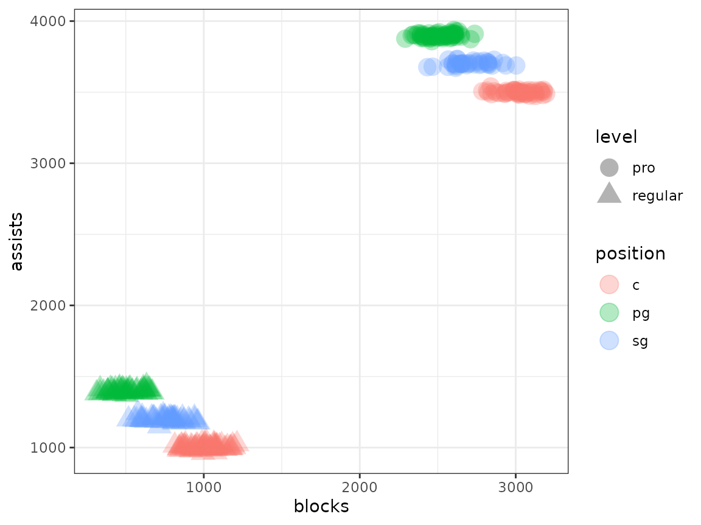
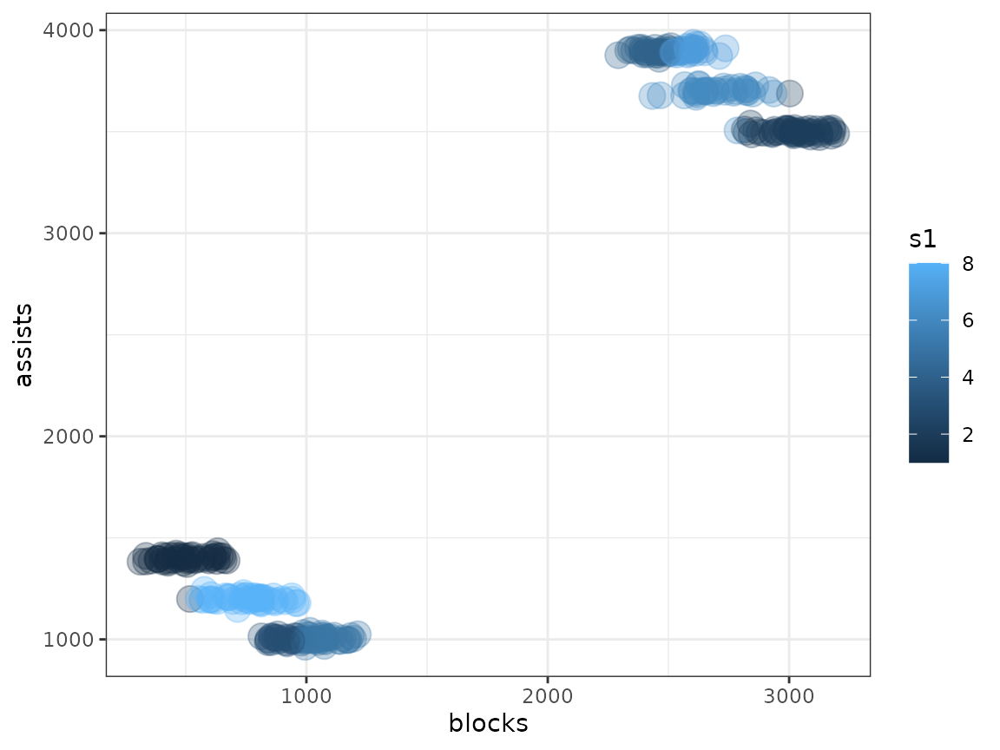
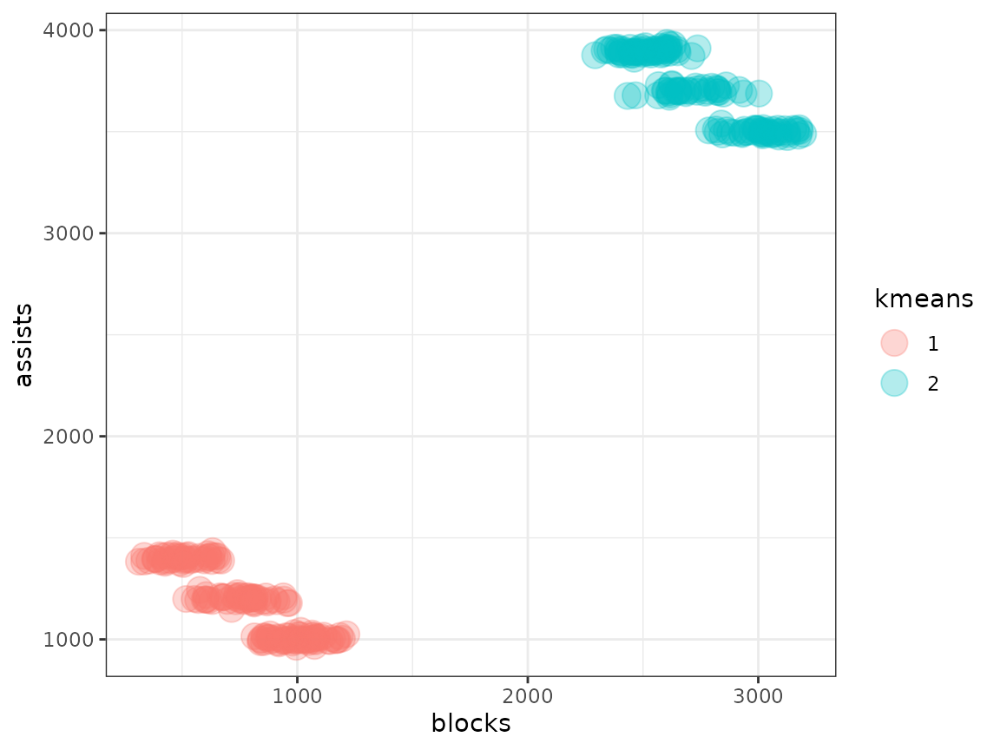

Download a copy of the vignette to follow along here: confounders.Rmd
This vignette walks through handling confounding features and
features introducing unwanted signal using the metasnf
package.
A confounding feature is one that influences both a dependent and independent feature, making it appear as though there is a stronger association between the two than there mechanistically is.
An unwanted feature (terminology which is being defined here) is a feature that a user explicitly does not want their subtyping solution to be strongly associated with.
Accounting for confounding features
Simply include the confounding feature into the cluster analysis and bear in mind that the separation across clusters you see in any feature is not evidence of a causal link.
Consider the following scenario. Children raised in wealthy homes can afford to go to better schools, are likely to be raised in less stressful environments, and can afford tutoring outside of school. Consequently, they have higher standardized test scores. They are also substantially more likely to live near a lake. If you were to cluster children according to their standardized test scores and whether or not they live near a lake, you may find one cluster that has kids who live near a lake and who have high test scores and a separate cluster that has kids who don’t live near a lake and have low test scores. Of course, there is no causal relationship indicating that living near a lake improves your test scores, or that your test scores causally influence your proximity to lakes. The confounding feature is household income. By including household income in the model, you’ll get the same clusters, but those clusters will also separate across the “confounding” feature.
Unwanted signal
Consider the following scenario. You wish to find clusters of basketball players. For simplicity, let’s say there are three basketball positions:
- point guards, who have a lot of assists and very few blocks
- centers, who have very few assists and lots of blocks
- shooting guards, who have a moderate amount of assists and blocks (and a lot of personal fouls)
You are handed a dataset containing the assists and blocks per season of a large number of basketball players. However, half of the basketball players are from regular players at a community center and the other half are from the pro.
What does the data look like?
library(metasnf)
library(SNFtool)
library(ggplot2)
# Generating function for the blocks-per-season of a player
generate_blocks <- function(level, position) {
# The average blocks per season of all basketball players
blocks <- rnorm(n = 1, mean = 500, sd = 50)
# Effect of playing in the pro
if (level == "pro") {
blocks <- blocks + rnorm(n = 1, mean = 2000, sd = 100)
} else {
# Match the noisiness of the pro players
blocks <- blocks + rnorm(n = 1, mean = 0, sd = 100)
}
# Effect of the player's position
if (position == "pg") {
blocks <- blocks + 0 # Just to be explicit about it
} else if (position == "c") {
blocks <- blocks + 500
} else if (position == "sg") {
blocks <- blocks + 250
}
return(blocks)
}
# Generating function for the assists-per-season of a player
generate_assists <- function(level, position) {
# The average assists per season of all basketball players
assists <- rnorm(n = 1, mean = 1000, sd = 10)
# Effect of playing in the pro
if (level == "pro") {
assists <- assists + rnorm(n = 1, mean = 2500, sd = 10)
} else {
# Match the noisiness of the pro players
assists <- assists + rnorm(n = 1, mean = 0, sd = 10)
}
# Effect of the player's position
if (position == "pg") {
assists <- assists + 400 # Just to be explicit about it
} else if (position == "c") {
assists <- assists + 0
} else if (position == "sg") {
assists <- assists + 200
}
return(assists)
}
#
# Helper function to fill in blocks and assists for a player given their
# position and level.
generate_player_data <- function(df) {
df$"blocks" <- df |> apply(
MARGIN = 1,
FUN = function(x) {
generate_blocks(x[[1]], x[[2]])
}
)
df$"assists" <- df |> apply(
MARGIN = 1,
FUN = function(x) {
generate_assists(x[[1]], x[[2]])
}
)
return(df)
}
# Generate the data
rows <- 300
player_data <- data.frame(
level = sample(c("regular", "pro"), size = rows, replace = TRUE),
position = sample(c("pg", "c", "sg"), size = rows, replace = TRUE)
) |> generate_player_data()
player_data$"id" <- as.character(seq_len(nrow(player_data)))
# Plot by position
player_data |>
ggplot(aes(x = blocks, y = assists, shape = level, colour = position)) +
geom_point(size = 5, alpha = 0.3) +
theme_bw()
Let’s say we weren’t interested in the fact that pro players aren’t the same as community center players. We just wanted to know if different styles of play (the ground truth being the position) exist. What kind of clustering results do we get on this data?
set.seed(42)
metasnf_data <- dplyr::select(player_data, "id", "assists", "blocks")
dl <- data_list(
list(
data = metasnf_data,
name = "player_data",
domain = "player_data",
type = "continuous"
),
uid = "id"
)
sc <- snf_config(
dl = dl,
n_solutions = 1,
possible_snf_schemes = 1,
k_values = 20,
alpha_values = 0.8
)
#> ℹ No distance functions specified. Using defaults.
#> ℹ No clustering functions specified. Using defaults.
sol_df <- batch_snf(dl, sc)
cluster_solution_df <- t(sol_df)
# matching the subject names
metasnf_data$"uid" <- paste0("uid_", metasnf_data$"id")
# merging back the original data
metasnf_data <- dplyr::inner_join(metasnf_data, cluster_solution_df, by = "uid")
metasnf_data |>
ggplot(aes(x = blocks, y = assists, colour = s1)) +
geom_point(size = 5, alpha = 0.3) +
theme_bw()
In this case, the default spectral clustering has done a decent job of separating out the groups, but with too much granularity. We have separate clusters just for pro players and just for community center players, which is not what we want. Other clustering algorithms can fare even worse in this context.
If you have R version 4.3.0 or higher, you can use the snippet
factoextra::fviz_nbclust(metasnf_data[, c("assists", "blocks")], kmeans, method = "wss")
to see that the optimal number of clusters is 2.
km <- kmeans(metasnf_data[, c("blocks", "assists")], centers = 2, nstart = 25)
km$"cluster"
#> [1] 1 1 2 1 1 2 1 1 1 2 2 1 1 1 1 2 1 1 2 2 1 1 2 1 1 1 2 1 2 2 1 1 2 2 2 1 1
#> [38] 2 1 1 2 1 2 1 2 1 2 2 1 2 1 2 2 2 1 1 2 2 1 2 1 1 1 2 1 2 1 2 2 1 2 2 2 1
#> [75] 2 1 2 1 2 1 2 2 2 1 1 2 2 1 1 2 2 2 1 2 1 1 2 2 1 2 2 2 1 2 2 2 2 2 1 1 1
#> [112] 2 1 1 1 1 2 1 1 1 2 2 1 1 1 1 2 1 1 2 2 2 1 1 1 1 1 2 1 1 1 1 1 1 2 1 2 1
#> [149] 2 2 1 2 2 1 2 1 2 1 2 2 1 2 1 1 2 1 1 1 1 2 1 2 1 1 2 2 2 1 2 2 1 2 2 2 1
#> [186] 2 1 2 1 2 1 2 2 2 1 1 1 2 1 2 2 2 1 2 2 1 1 1 1 1 2 2 2 2 1 1 2 1 2 1 1 1
#> [223] 1 1 1 1 1 1 1 1 1 2 1 1 1 1 2 2 2 1 1 2 2 2 1 2 2 2 2 2 1 2 2 2 2 1 1 2 2
#> [260] 1 1 1 1 2 1 2 1 1 2 2 1 1 2 1 1 1 2 1 1 2 2 1 2 2 1 2 1 2 2 2 2 2 1 1 2 2
#> [297] 2 2 1 1
metasnf_data$"kmeans" <- factor(km$"cluster")
metasnf_data |>
ggplot(aes(x = blocks, y = assists, colour = kmeans)) +
geom_point(size = 5, alpha = 0.3) +
theme_bw()
To prevent the clustering from caring about the signal introduced by the pro/community center level differences, we’ll (linearly) regress out the effect of being a pro player.
player_data$"adjusted_blocks" <- resid(lm(blocks ~ level, player_data))
player_data$"adjusted_assists" <- resid(lm(assists ~ level, player_data))
# Plot by position
player_data |>
ggplot(
aes(
x = adjusted_blocks,
y = adjusted_assists,
shape = level,
colour = position
)
) +
geom_point(size = 5, alpha = 0.3) +
theme_bw()
That’s looking much more like what we want to see. Following this correction, you’ll have a much easier identifying the clustering structure that exists independently of the variance you don’t care about from pro-status.
Procedure using the metasnf package
Note that you can only adjust out signal from categorical features, the adjustment will be linear, it will only be applied to numeric (continuous, discrete, ordinal) data, and that the adjustment can lead to some major information loss (see the section below)!
head(player_data)
#> level position blocks assists id adjusted_blocks adjusted_assists
#> 1 regular c 856.4165 1015.4749 1 74.06966 -162.28888
#> 2 regular sg 734.9430 1205.1276 2 -47.40385 27.36383
#> 3 pro pg 2443.7954 3913.3202 3 -286.18349 198.25452
#> 4 regular c 1141.4151 992.0313 4 359.06833 -185.73242
#> 5 regular c 854.0715 986.2844 5 71.72467 -191.47938
#> 6 pro c 2863.3687 3506.7345 6 133.38977 -208.33114
dl <- data_list(
list(
data = player_data[, c("id", "blocks", "assists")],
name = "player_data",
domain = "player_data",
type = "continuous"
),
uid = "id"
)
# Correction list for just the level
unwanted_signal_list1 <- data_list(
list(
data = player_data[, c("id", "level")],
name = "player_level",
domain = "player_data",
type = "categorical"
),
uid = "id"
)
# Correction list for both player level and position
unwanted_signal_list2 <- data_list(
list(
data = player_data[, c("id", "level", "position")],
name = "player_level",
domain = "player_data",
type = "categorical"
),
uid = "id"
)
adjusted_dl <- linear_adjust(dl, unwanted_signal_list1)
# Combine the data from the two data_lists the second list is being merged
# only because it also has the position data, for plotting purposes
merged_df <- as.data.frame(c(adjusted_dl, unwanted_signal_list2))
merged_df |>
ggplot(aes(x = blocks, y = assists, shape = level, colour = position)) +
geom_point(size = 5, alpha = 0.3) +
theme_bw()
# Correcting too many things!
adjusted_dl2 <- linear_adjust(dl, unwanted_signal_list2)
merged_df2 <- as.data.frame(c(adjusted_dl2, unwanted_signal_list2))
merged_df2 |>
ggplot(aes(x = blocks, y = assists, shape = level, colour = position)) +
geom_point(size = 5, alpha = 0.3) +
theme_bw()Limitations and important considerations
1. Excessive loss of signal
When you remove the signal associated with a feature, you will impact every other feature to a degree that is proportional to the correlation between that feature and the unwanted one. Practically, any feature that is strongly correlated with your unwanted signal feature may be better off removed.
Consider two features: temperature and ice cream sales. It just so happens that ice cream sales are purely proportional to temperature, plus some random noise. There is no other information that one could collect to improve their ability to predict ice cream sales.
If you wanted to learn about the structure of ice cream sales excluding the signal introduced by temperature, the adjustment would turn the ice cream sales data into genuine pure noise. At that point any clusters generated would be totally meaningless and non-reproducible.
3. Inability to adjust ordinal, discrete, or categorical data
Linearly adjusting categorical/factor features is not possible. Attempting to adjust data that has a discrete or ordinal structure will likely not completely remove the association between the regressor features and the features being regressed.